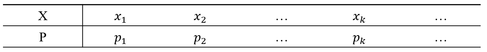

设随机试验\(E\)的样本空间为\(\Omega\)，若对于每一个\(\omega \in \Omega\)，都有一个实数\(X(\omega)\)与之对应，则称\(X(\omega)\)为随机变量，简记为\(X\).
随机变量通常用大写字母\(X,Y,Z,\cdots\)表示.
可能的取值只有有限个或可列无限多个的随机变量\(X\).
\(X\)取所有可能值的概率，即\(P\{X = x_k\} = p_k,~k =1,2,\cdots\)
也可以用表格表示
二项分布的泊松近似：当\(n\rightarrow \infty\)而\(p\rightarrow 0\)时，\(b(n,p)\)可以近似看作\(P(np)\)
帕斯卡分布 $$P\{x = k\} = C_{k-1}^np^n(1-p)^{k-n}$$对于任意实数\(x_1 \lt x_2\)
$$P\{x_1 \lt X \leq x_2\} = P\{X \leq x_2\} - P\{X \leq x_1\} = F(x_2) - F(x_1)$$在连续区间上取值的随机变量\(X\).
连续型随机变量的概率密度若对随机变量\(X\)的分布函数\(F(x)\)存在非负的可积函数\(f(x)\)，使得对于任意实数\(x\)有：
$$F(x) = \int^x_{-\infty}f(t)dt$$则\(X\)为连续型随机变量.
称\(f(x)\)为\(X\)的概率密度函数，简称为概率密度或密度函数.
几何意义\(F(x)\)为\((-\infty, x)\)区间上\(f(x)\)围成的面积.
设\(X_1, X_2\)为两个连续型随机变量，其密度函数分别为\(f_1(x), f_2(x)\)，分布函数为\(F_1(x), F_2(x)\)，有以下结论成立：
\(f_1(x)f_2(x)\)不一定为某随机变量的密度函数.
反例：
$$X_1\sim e(2) \Rightarrow f_1(x) = \begin{cases}2e^{-2x}, x\gt 0\\ 0, others\end{cases}$$ $$X_1\sim e(3) \Rightarrow f_1(x) = \begin{cases}3e^{-3x}, x\gt 0\\ 0, others\end{cases}$$ $$\int_{-\infty}^{+\infty}f_1(x)f_2(x)\mathrm{d}x = \int_0^{+\infty}6e^{-5x}\mathrm{d}x = -\frac{6}{5}e^{-5x}|_0^{+\infty} = \frac{6}{5} \gt 1$$故\(f_1(x)f_2(x)\)不为某随机变量的密度函数.
\(f_1(x)F_2(x) + f_2(x)F_1(x)\)一定为某随机变量的密度函数.
故\(f_1(x)F_2(x) + f_2(x)F_1(x)\)为某随机变量的密度函数.
设随机变量\(X\)具有概率密度\(f_X(x), -\infty \lt x \lt +\infty\)，且\(g(x)\)处处可导且单调，则\(Y = g(X)\)的概率密度为 $$f_Y(y) = \begin{align} \begin{cases} f_X[h(y)]|h'(y)|,~&\alpha \lt y \lt \beta\\ 0,~&others \end{cases} \end{align}$$ 其中，\(h(y)\)为\(g(x)\)的反函数，\(\alpha = min\{g(-\infty), g(+\infty)\}, \beta = max\{g(-\infty), g(+\infty)\}\)